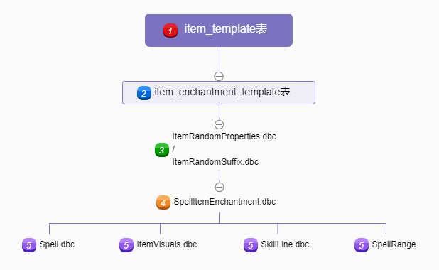
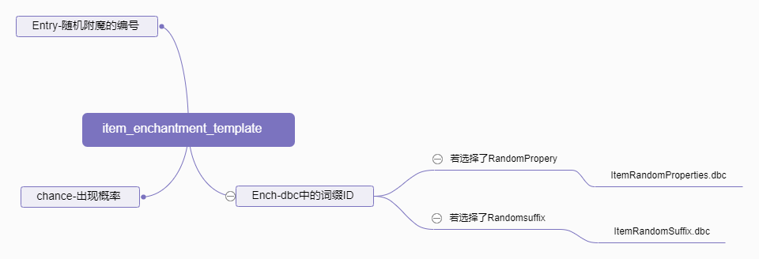
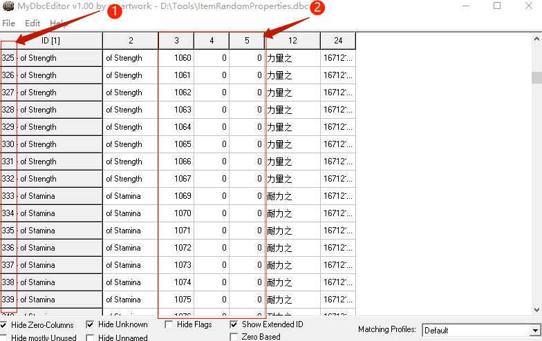
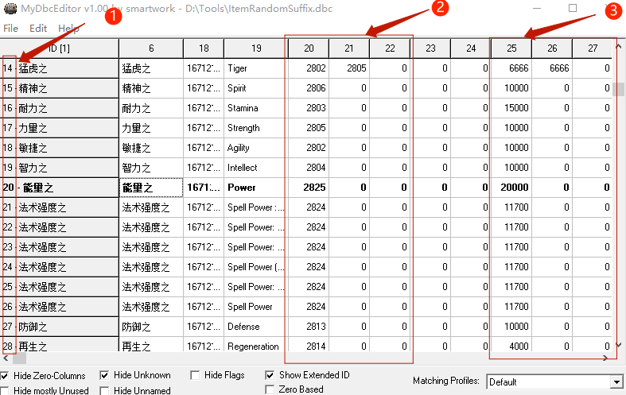
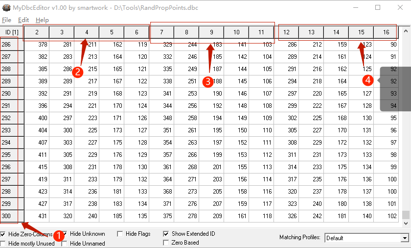

如何制作物品随机附魔
前言
制作随机附魔这种教程已经烂大街了，网上随便一搜就有，随机附魔实现的方法有MOD、数据库和DBC，以及Eluna三种方式，本文大量参考网络文章（尤其是参考法号蓝灯，论坛账号wen23t的文章），我这边就拾人牙慧，尽可能的较为详细、较为清晰的介绍下数据库和DBC方式吧！
本文所需的工具为：
- Navicat，连接数据库用；
- MPQEditor（提取码：3q32），制作客户端补丁用；
- MyDbcEditor（提取码：qqi2）或WDBX Editor工具（提取码：qkn1），编辑dbc文件用。
原理介绍

如图所示，简单说下逻辑关系：
item_template表对应item_enchantment_template表数值；item_enchantment_template表对应ItemRandomProperties.dbc或者ItemRandomSuffix.dbc文件数值；ItemRandomProperties.dbc或者ItemRandomSuffix.dbc文件对应SpellItemEnchantment.dbc文件数值；SpellItemEnchantment.dbc文件分别对应Spell.dbc、ItemVisuals.dbc和SkillLine.dbc文件数值。
有点复杂，上图我分了五个层次，我将分别介绍：
第一层
在item_template表内，有两种随机附魔方式，分别是：
- 固定数值的随机附魔：
RandomPropery - 动态数值的随机附魔：
Randomsuffix
两者只能选择其一，即在RandomPropery如果有了数字，Randomsuffix里就不要填写。这里所填的数字即随机附魔的编号，对应item_enchantment_template表内的Entry值。
第二层

如图所示，item_enchantment_template表内的Entry为随机附魔的编号，item_enchantment_template表内的Ench填写dbc文件中的词缀ID，chance为该随机附魔出现的概率，需要说明的是：
- 如果你选择了
RandomPropery，则Ench的值你需要填写的是ItemRandomProperties.dbc文件中的词缀ID； - 如果你选择了
Randomsuffix，则Ench的值你需要填写的是ItemRandomSuffix.dbc文件中的词缀ID; Entry不唯一，可以是多个，但同一个Entry的chance的数值之和必须等于100。
第三层
ItemRandomProperties.dbc
对应RandomPropery，我们需要查看的是ItemRandomProperties.dbc文件，请使用MyDbcEditor打开：

- 即词缀ID，也就是上文所说
item_enchantment_template表内的Ench所要填写的数值； - 即附魔效果编号，也就是说我一个词缀最多可以有三种附魔效果。
ItemRandomSuffix.dbc
对应Randomsuffix，我们需要查看的是ItemRandomSuffix.dbc文件，请使用MyDbcEditor打开：

- 即词缀ID，也就是上文所说
item_enchantment_template表内的Ench所要填写的数值； - 即附魔效果编号，也就是说我一个词缀最多可以有三种附魔效果；
- 即倍率控制，第25列控制20列的附魔效果倍率，第26列控制21列的附魔效果倍率，第27列控制22列的附魔效果倍率。
RandPropPoints.dbc
这里重点说下倍率控制，当下文第四层的SpellItemEnchantment.dbc文件内第3-5列的某数值为5（即表示为属性点数），并且其对应最小值为0x6时，会指向RandPropPoints.dbc文件中的索引值：

- 即装备等级；
- 即史诗装备；
- 即精良装备；
- 即优秀装备。
其中史诗、精良、优秀装备每栏对应装备类型为：
| 栏数 | 对应的装备类型 |
|---|---|
| 第2、7和12栏 | 头部 衬衣 胸部 腿部 双手武器 长袍 |
| 第3、8和13栏 | 肩膀 腰带 脚部 手套 饰品 |
| 第4、9和14栏 | 脖子 护腕 戒指 盾牌 披风 |
| 第5、10和15栏 | 单手武器 主手武器 副手武器 |
| 第6、11和16栏 | 弓箭 投掷武器 远程武器 |
以装备等级为300的装备举例，假如我们有一件紫色头部装备，那么他参考的是2-6列中第2列的索引值：431，假设我们给他的附魔效果倍率是10000，那么这件装备附魔属性值=10000（倍率）×431（索引值）÷10000，这件装备附魔属性值就是431，如果倍率是20000，那么就是：862。
这两个dbc的意义在于可以精细控制不同装等、不同颜色、不同类型装备的附魔属性值。
第四层
以上ItemRandomProperties.dbc和ItemRandomSuffix.dbc文件的附魔效果编号均指向SpellItemEnchantment.dbc文件，请使用MyDbcEditor打开该文件：
| 列数 | 说明 | 详细解释 |
|---|---|---|
| 1 | 编号 | |
| 2 | 费用 | |
| 3-5 | 类型 | 1=法术伤害；2=物理伤害；3=混合（武器、全属性、钓鱼等）；4=护甲；5=属性点数；6=石化（嘲讽） |
| 6-8 | 附魔最小值 | 可控1、2、4类型的数值，不可控3、5、6类型的数值 |
| 9-11 | 附魔最大值 | 可控1、2、4类型的数值，不可控3、5、6类型的数值 |
| 12-14 | Spell技能（id） | 若数值为5，则代表状态，否则参考spell.dbc技能ID |
| 19 | 附魔效果描述 | |
| 31 | 描述标识 | |
| 32 | 光环 | 参考ItemVisuals.dbc |
| 33 | 攻击范围 | 参考SpellRange.dbc |
| 34 | 珠宝编号 | |
| 35 | 附魔条件 | |
| 36 | 需要技能 | 参考SkillLine.dbc |
| 37 | 需要技能等级 | |
| 38 | 需要等级 |
注意：DBC文件里面有的列中的值是以”0x”开头的，那表示这是16进制的数，碰到这种数字，就需要用计算器转化成十进制（”0x”只是一个16进制的标识，不要改动）
第五层
这里的Spell.dbc、ItemVisuals.dbc、SpellRange.dbc和SkillLine.dbc文件我就不详细说了，因为太多太多了，后面我会分别单独出文章来介绍。
操作实践
比如我想某件装备有一定几率附魔遗产技能：
第五层作业
- 首先在
Spell.dbc里面加入遗产技能，打开WDBX Editor工具，按Ctrl+O，选择Spell.dbc文件，选择WotLK 3.3.5（12340）选项，点Load； - 打开后选择菜单栏的
Import选项，点From CSV，选择下载的Spell.csv文件（提取码：pm4m），点Load导入遗产技能，导入后按Ctrl+S保存文件。
第四层作业
- 打开WDBX Editor工具，按
Ctrl+O，选择SpellItemEnchantment.dbc文件，选择WotLK 3.3.5（12340）选项，点Load； - 打开后选择菜单栏的
Import选项，点From CSV，选择下载的SpellItemEnchantment.csv文件（提取码：ejbf），点Load导入，导入后按Ctrl+S保存文件。
在这里如果你源码功能里有 mod-random-enchants，做到这里就完事了，如果你没有，继续下一步：
第三层作业
打开WDBX Editor工具，按Ctrl+O，选择ItemRandomProperties.dbc文件，选择WotLK 3.3.5（12340）选项，点Load；
打开后选择菜单栏的Import选项，点From CSV，选择下载的ItemRandomProperties.csv文件（提取码：zlmh），点Load导入，导入后按Ctrl+S保存文件。
第二层作业
打开Navicat工具，打开acore_world数据库里的item_enchantment_template表，点导入，导入类型选CSV文件，选择下载的item_enchantment_template.csv文件（提取码：b1ao），一路点下一步导入。
第一层作业
这里我以破损的短剑为例，打开acore_world数据库里的item_template表，找到entry为25的破损的短剑物品，在RandomPropery栏里输入10000。
制作补丁
服务端补丁
将你制作的Spell.dbc、SpellItemEnchantment.dbc、ItemRandomProperties.dbc三个文件上传到服务端的dbc文件夹，重启服务端即可生效。
客户端补丁
新建客户端补丁文件夹，在其目录下再新建DBFilesClient文件夹，将你制作的Spell.dbc、SpellItemEnchantment.dbc、ItemRandomProperties.dbc三个文件放入其中；
右键以管理员方式打开MPQEditor工具，点菜单栏新建MPQ，文件名输入patch-zhCN-A.MPQ，点下一步，点从文件或者文件夹创建MPQ文档，选择客户端补丁文件夹，一直下一步即可制作好客户端补丁；
将patch-zhCN-A.MPQ放入World of Warcraft\Data\zhCN游戏目录，运行游戏查看效果：

测试服内我添加了所有物品掉落时，有一定几率附魔遗产技能，可以去体验下。
批量更改
回到第一层，我这里是以一件装备作为演示，如果需要批量添加所有装备的随机附魔，则需要SQL语句，举例：
UPDATE item_template SET RandomProperty = 10000 where randomsuffix = 0 and RandomProperty=0 and (class = 4 or class = 2) and Quality > 1 and quality<5 and (bonding = 1 or bonding = 2) and ItemLevel > 30; |
这段代码的意思是：为randomsuffix = 0并且RandomProperty=0，并且物品种类为护甲或者武器，并且物品品质大于白色小于橙色，并且物品为装备绑定或拾取绑定，并且物品等级大于30的物品，进行10000附魔。
 微信
微信 支付宝
支付宝